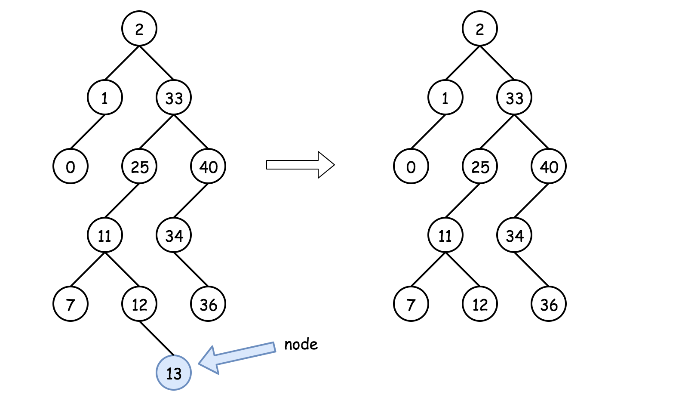
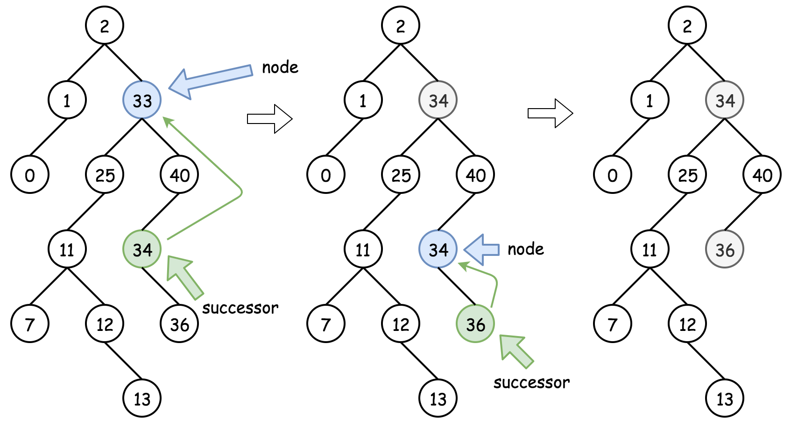

力扣二叉树之二叉搜索树
本文主要介绍LeetCode上关于二叉搜索树的题目。
关键词：二叉搜索树
定义
二叉搜索树是一个有序树。
- 若他的左子树不为空，则左子树上所有节点的值均小于根节点的值；
- 若他的右子树不为空，则右子树上所有节点的值均大于根节点的值；
- 他的左子树和右子树也为二叉搜索树。
一句话总结：左子树非空，左子树上节点小于根节点；右子树非空，右子树的节点大于根节点。
题目
验证二叉搜索树
给定二叉搜索树，判断其是否是二叉搜索树。
注意二叉搜索树的特征：左子树非空，左子树小于根节点；右子树非空，右子树大于根节点。
解法
设计一个递归函数helper(root, lower, upper)来递归判断。考虑以root为根的子树，判断子树中所有节点的值是否在(lower, upper)的范围内（开区间）。如果root节点的值val不在(lower, upper)的范围内说明不满足条件直接返回，否则我们要继续递归检查左右子树是否满足。
根据二叉搜索树的性质，在递归调用左子树时，需要把上界upper修改为当前节点的值；在递归调用右子树时，把下界lower修改为当前节点的值。
1 | func isValidBST(root *TreeNode) bool { |
二叉搜索树的搜索
给定二叉搜索树（BST）的根节点和一个值。 你需要在BST中找到节点值等于给定值的节点。 返回以该节点为根的子树。 如果节点不存在，则返回 NULL。
解法
根据二叉搜索树（BST）的性质，左节点非空时，左节点的值小于根节点的值；右节点非空时，右节点的值大于根节点的值。
当给定值小于根节点值时，根节点变为左节点；当给定值大于根节点，根节点变为右节点，代码如下：
1 | func searchBST(root *TreeNode, val int) *TreeNode { |
二叉搜索树的最近公共祖先
给定二叉搜索树，找到该树中两个指定节点的最新公共祖先。
解法
根据二叉搜索树（BST）的性质，左节点非空时，左节点的值小于根节点的值；右节点非空时，右节点的值大于根节点的值。
当某节点值的值在两个指定节点的值之间时，该节点就是两指定节点的最近公共祖先，代码如下：
1 | func lowestCommonAncestor(root, p, q *TreeNode) *TreeNode { |
二叉搜索树的插入操作
给定二叉搜索树（BST）的根节点 root 和要插入树中的值 value ，将值插入二叉搜索树。 返回插入后二叉搜索树的根节点。 输入数据 保证 ，新值和原始二叉搜索树中的任意节点值都不同。
注意，可能存在多种有效的插入方式，只要树在插入后仍保持为二叉搜索树即可。你可以返回任意有效的结果。
解法
根据二叉搜索树的性质，左节点非空时，左节点的值小于根节点的值；当右节点非空时，右节点的值大于根节点的值。
若根节点为空，直接返回值为给定值的二叉树节点；若非空，判断根节点的值和当前值的大小关系：
- 若当前值大且右节点非空，则根节点到右节点；若右节点为空，则直接赋值右节点为当前值的节点。程序返回root节点
- 若当前值小且左节点非空，则根节点到左节点；若左节点为空，则直接赋值左节点为当前值的节点。程序返回root节点
1 | func insertIntoBST(root *TreeNode, val int) *TreeNode { |
删除二叉搜索树的节点
给定一个二叉搜索树的根节点 root 和一个值 key，删除二叉搜索树中的 key 对应的节点，并保证二叉搜索树的性质不变。返回二叉搜索树（有可能被更新）的根节点的引用。
解法
对于二叉搜索树，中序遍历的结果递增排序的序列。中序遍历的过程是Left -> Node-> Right
若Successor
代表的是中序遍历序列的后一个节点，即比当前节点大的最小节点，则Successor的求解方法为：
- 先取当前节点的右节点，然后一直取该节点的左节点，直到左节点为空，最后指向的节点为
Successor。
1 | func sucessor(node *TreeNode) int { |
若Predecessor
代表的是中序遍历序列的前一个节点，即比当前节点小的最大节点，则Predecessor的求解方法为：
- 先取当前节点的右节点，然后一直取该节点的右节点，直到右节点为空，最后指向的节点为
Predecessor。
1 | func predecessor(node *TreeNode) int { |
有三种删除节点的情况：
- 要删除的节点为叶子节点，可以直接删除。

- 要删除的节点不是叶子节点且拥有右节点，则该节点可以由
Successor节点即中序遍历序列的后一个节点替代，该节点位于右子树较低的位置，可以从Successor节点的位置向下递归以删除从Successor节点；

- 要删除的节点不是叶子节点且没有右节点但是有左节点。这意味着
Successor节点在他的上面，此时我们可以使用Predecessor节点进行替代，再向下递归删除Predecessor节点；

算法：
- 如果
key > root.Val，说明要删除的节点在右子树，root.Right = deleteNode(root.Right, key)； - 如果
key < root.Val，说明要删除的节点在左子树，root.Left = deleteNode(root.Left, key)； - 如果
key == root.Val，说明了找到了要删除的节点：- 如果该节点是叶子节点，直接删除：
root == nil； - 如果该节点不是叶子节点且拥有右节点，则用他的
Sucessor节点的值替换：root.Val = sucessor(root)，并递归删除Sucessor节点：root.Right = deleteNode(root.Right, root.Val)； - 如果该节点不是叶子节点且没有右节点，拥有左节点，则用他的
Predecessor节点值替换：root.Val = predecessor(root)，并递归删除Precessor节点：root.Left = deleteNode(root.Left, root.Val)；
- 如果该节点是叶子节点，直接删除：
- 返回root。
1 | func sucessor(node *TreeNode) int { |
修剪二叉树
给你二叉搜索树的根节点 root ，同时给定最小边界low 和最大边界 high。通过修剪二叉搜索树，使得所有节点的值在[low, high]中。修剪树 不应该 改变保留在树中的元素的相对结构 (即，如果没有被移除，原有的父代子代关系都应当保留)。 可以证明，存在 唯一的答案 。
所以结果应当返回修剪好的二叉搜索树的新的根节点。注意，根节点可能会根据给定的边界发生改变。
解法
- 当
node.Val > R，那么修剪后的二叉树必定出现在节点的左边； - 当
node.Val < L，那么修剪后的二叉树必定出现在节点的右边； - 其他情况修剪树的两边
1 | func trimBST(root *TreeNode, L, R int) *TreeNode { |
将有序数组转换为二叉搜索树
给你一个整数数组nums ，其中元素已经按 升序 排列，请你将其转换为一棵 高度平衡 二叉搜索树。
高度平衡 二叉树是一棵满足「每个节点的左右两个子树的高度差的绝对值不超过 1 」的二叉树。
解法
选择中间数字作为二叉搜索树的根节点，这样分给左右子树的数字个数相同或者只相差1个，因此可以保持树平衡。
如果数组的长度为奇数，则根节点的选择是唯一的。如果数组的长度是偶数，则可以选择你中间位置左边的数字作为根节点或者中间位置右边的数字作为根节点。选择不同的数字作为根节点，则创建的平衡二叉搜索树也是不同的。
确定平衡二叉搜索树的根节点之后，其余数字分别位于平衡二叉搜索树的左子树和右子树，左子树和右子树分别也是平衡二叉搜索树，因此可以通过递归的方式创建平衡二叉搜索树。
递归的基准情形是平衡二叉搜索树不包含任何数字，此时二叉搜索树为空。
在给定中序遍历数组的情况下，每一个子树的数字在数组中一定是连续的，因此可以通过数组下标范围确定子树包含的数字，下标范围记为[left, right]。对于整个中序遍历序列，下标范围从left=0到right=nums.length-1。当left>right时，平衡二叉搜索树为空。
方法一：中序遍历，总是选择中间左边的数字作为根节点
选择中间位置左边的数字作为根节点，则根节点的下标为mid = (left + right) / 2，此处的除法为整数除法。
1 | func sortedArrayToRST(num []int) *TreeNode { |
扩展
根据中序和后序序列遍历二叉树
从前序与中序遍历序列构造二叉树
把二叉搜索树转换为累加树
给出二叉搜索树的根节点，该树的节点各不相同，请你将其转换为累加树，使得每个节点node的新值等于原树中大于或等于node.Val的值之和。
解法
二叉搜索树的中序遍历是单调递增的序列，对中序遍历进行反序操作可以得到单调递减的序列。对这个单调递减的序列进行操作即可得到这个累加树。
1 | var sum int |
拓展
递归函数是否需要返回值的问题？